Disclaimer: The documents listed on this page are copyright-protected. By clicking on the [PDF] links below, you confirm that you or your institution have the right to access the corresponding pdf file.
| 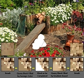 |
Tsz-Ho Kwok, Hoi Sheung, and Charlie C.L. Wang,
"Fast query for exemplar-based image completion",
IEEE Transactions on Image Processing, vol.19, no.12, pp.3106-3115, December 2010.
[PDF]
Abstract In this paper, we present a fast algorithm for filling unknown regions in an image using the strategy of exemplar-matching. Unlike the original exemplar-based method using exhaustive search, we decompose exemplars into the frequency coefficients and select fewer coefficients which are the most significant to evaluate the matching score. We have also developed a local gradient-based algorithm to fill the unknown pixels in a query image block. These two techniques bring the ability of input with varied dimensions to the fast query of similar image exemplars. The fast query is based on a search-array data structure, and can be conducted very efficiently. Moreover, the evaluation of search-arrays runs in parallel maps well on the modern graphics hardware with Graphics Processing Units (GPU). The functionality of the approach has been demonstrated by experimental results on real photographs. |
| 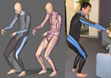 |
Charlie C.L. Wang, Yunbo Zhang, and Hoi Sheung, "From designing products to fabricating them from planar materials", IEEE Computer Graphics and Applications, vol.20, no.6, pp.74-85, November 2010.
[TechReport]
[From Styling Design to Fabricated Wetsuit @ YouTube]
[Application in Facial Mask Design @ YouTube]
[Exuskin]
Abstract This article describes a geometric modeling system that generates industry required planar pieces for fabricating user-customized products from styling designs. The processing from style design to industrial patterns is automated. Prestored styling designs can be automatically mapped into different reference model shapes and then unfolded into planar pieces. Besides, a map-guided algorithm has been developed to locate unfolded pieces according to industrial requirement. |
| 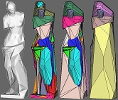 |
Pu Huang, and Charlie C.L. Wang,
"Volume and complexity bounded simplification of solid model represented by binary space partition",
ACM Symposium on Solid and Physical Modeling 2010, pp.177-182, Haifa, Israel, September 1-3, 2010. [An extended version in PDF]
Abstract We present a volume and complexity bounded solid simplification of models represented by Binary Space Partition (BSP). Depending on the compact and robust representation of a solid model in BSP-tree, the boundary surface of a simplified model is guaranteed to be two-manifold and self-intersection free. Two techniques are investigated in this paper. The volume bounded convex simplification can collapse parts with small volumes on the model into a simple convex volume enclosing the volumetric cells on the input model. The selection of which region to simplify is based on a volume-difference metric, with the help of which the volume difference between the given model and the simplified one is minimized. Another technique is a plane collapse method which reduces the depth of the BSP-tree while still preserving volume bounding. These two techniques are integrated into our solid simplification algorithm to give satisfactory results. |
| 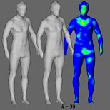 |
Chih-Hsing Chu, Ya-Tien Tsai, Charlie C.L. Wang, and Tsz-Ho Kwok,
"Exemplar-based statistical model for semantic parametric design of human body",
Computers in Industry, vol.61, no.6, pp.541-549, August 2010. [PDF]
[Project Page - Android APP]
Abstract This paper presents an exemplar-based method to provide intuitive way for users to generate 3D human body shape from semantic parameters. In our approach, human models and their semantic parameters are correlated as a single linear system of equations. When users input a new set of semantic parameters, a new 3D human body will be synthesized from the exemplar human bodies in the database. This approach involves simpler computation compared to non-linear methods while maintaining quality outputs. A semantic parametric design in interactive speed can be implemented easily. Furthermore, a new method is developed to quickly predict whether the parameter values is reasonable or not, with the training models in the human body database. The reconstructed human bodies in this way will all have the same topology (i.e., mesh connectivity), which facilitates the freeform design automation of human-centric products. (Supplementary Technicanl Report - "PCA on human body database" [PDF]) |
 |
Charlie C.L. Wang, Yuen-Shan Leung, and Yong Chen,
"Solid modeling of polyhedral objects by Layered Depth-Normal Images on the GPU",
Computer-Aided Design, vol.42, no.6, pp.535-544, June 2010. [PDF]
[Video@YouTube]
[Project Page - with Code]
Abstract We introduce a novel solid modeling framework taking advantage of the architecture of parallel computing on modern graphics hardware. Solid models in this framework are represented by an extension of the ray representation - Layered Depth-Normal Images (LDNI), which inherits the good properties of Boolean simplicity, localization and domain decoupling. The defect of ray representation in computational intensity has been overcome by the newly developed parallel algorithms running on the graphics hardware equipped with Graphics Processing Unit (GPU). The LDNI for a solid model whose boundary is represented by a closed polygonal mesh can be generated efficiently with the help of hardware accelerated sampling. The parallel algorithm for computing Boolean operations on two LDNI solids runs well on modern graphics hardware. A parallel algorithm is also introduced in this paper to convert LDNI solids to sharp-feature preserved polygonal mesh surfaces, which can be used in downstream applications (e.g., finite element analysis). Different from those GPU-based techniques for rendering CSG-tree of solid models, we compute and store the shape of objects in solid modeling completely on graphics hardware. This greatly eliminates the communication bottleneck between the graphics memory and the main memory. |
| 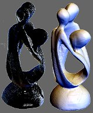 |
Shengjun Liu, and Charlie C.L. Wang,
"Orienting unorganized points for surface reconstruction",
Computers & Graphics, Special Issue of IEEE International Conference on Shape Modeling and Applications (SMI 2010), vol.34, no.3, pp.209-218, Arts et Metiers ParisTech, Aix-en-Provence, France, June 21-23, 2010. (With acceptance ratio as 10/56 = 17.8%)
[PDF] [Project Page - with Source Code]
Abstract We address the problem of assigning consistently oriented normal vectors to unorganized point cloud with noises, non-uniformities, and thinsharp features as a pre-processing step to surface reconstruction. The conventional orienting scheme using minimal spanning tree fails on points with the above defects. Different from the recently developed consolidation technique, our approach does not modify (i.e., down-sampling) the given point cloud so that we can reconstruct more surface details in the regions with very few points. The method consists of three major steps. We first propose a modified scheme of generating adaptive spherical cover for unorganized points by adding a sphere splitting step based on eigenvalue analysis. This modification can better preserve the connectivity of surface generated from the spheres in the highly sparse region. After generating the triangular mesh surface and cleaning its topology, a local search based algorithm is conducted to find the closest triangle to every input points and then specify their orientations. Lastly, an orientation-aware principle component analysis step gives correct and consistently oriented normal vectors to the unorganized input points. Conventional implicit surface fitting based approach can successfully reconstruct high quality surfaces from the unorganized point cloud with the help of normal vectors generated by our method. |
| 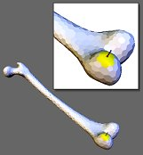 |
Jun Wu, Yuen-Shan Leung, Charlie C.L. Wang, Dangxiao Wang, and Yuru Zhang,
"Smooth force rendering on coarse polygonal meshes",
Computer Animation and Virtual Worlds,
Special Issue of 23rd International Conference on Computer Animation and Social Agents, vo.21, no.3-4, pp.235-244,
Saint-Malo, France, May 31 - June 2, 2010.
[Video@YouTube]
Abstract Piecewise linear polygonal model has only G0 continuity, thus users can easily feel the edges when using haptic device to touch a solid represented by coarse polygonal meshes. To produce an appealing haptic sensation for smooth solids, a large number of polygons are needed in conventional approaches. This however slows down computation and consumes much more memory. In this paper, we present a method to generate smooth feedback force in haptic interaction with coarse polygonal meshes. Our method calculates the interaction force based on Gregory patches, which are locally constructed from n-sided polygons and ensure G1 continuity across boundaries of patches. During the real time haptic interaction, the contact point is continuously tracked on the locally constructed Gregory patches and thus generates smooth haptic forces to be rendered. Our method is validated on various models with comparison to conventional force rendering techniques. |
| 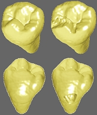 |
Jun Wu, Dangxiao Wang, Charlie C.L. Wang, and Yuru Zhang,
"Toward stable and realistic haptic interaction for tooth preparation simulation",
ASME Journal of Computing and Information Science in Engineering,
vol.10, no.2, 021007 (9 pages), June 2010. [PDF]
Abstract In this paper, we present the methods to generate a stable and realistic simulator for dental surgery. Firstly, a simplified force model is derived from grinding theory by considering the complex bur shape and dental handpiece's dynamic behavior. While the force model can be evaluated very fast to fulfill the high update rate of haptic rendering, it also explains basic haptic sensation features in tooth preparation operation. Secondly, as direct rendering of this damping-like force model may induce instability of the haptic device, we apply a virtual coupling based method to guarantee the stability in haptic rendering. Furthermore, implicit integration of the bur's motion equation is utilized to ensure numerical stability. Thirdly, to overcome force discontinuity caused by locally removing tooth materials, we define a two-layers based representation for the bur, where the boundary voxels are adopted to compute forces and the interior voxels are employed to remove materials from teeth. The experimental results agree with the real sensation described by skillful dentists. |
| 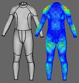 |
Charlie C.L. Wang, and Kai Tang, "Pattern computation for compression garment by a physical/geometric approach",
Computer-Aided Design, vol.42, no.2, pp.78-86, February 2010.
[PDF]
(This is an extended version of the paper - Pattern computation for compression garment, which is published in ACM Symposium on Solid and Physical Modeling 2008, pp.203-211, Stony Brook, New York, USA, June 2-4, 2008.) Abstract This paper addresses the problem of computing planar patterns for compression garments. In the garment industry, the compression garment has been more and more widely used to retain a shape of human body, where certain strain (or normal pressure) is designed at some places on the compression garment. Variant values and distribution of strain can only be generated by sewing different 2D patterns and warping them onto the body. We present a physical/geometric approach for computing 2D meshes that, when folded onto the 3D body, can generate a user-defined strain distribution through proper distortion. This is opposite to the widely studied mesh parameterization problem, whose objective is to minimize the distortion between the 2D and 3D meshes in angle, area or length. |
| 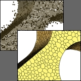 |
Hoi Sheung, and Charlie C.L. Wang, "Robust mesh reconstruction from unoriented noisy points",
ACM Symposium on Solid and Physical Modeling 2009, pp.13-24, San Francisco, California, October 5-8, 2009. [PDF] (Back Cover Image of Proceeding)
Abstract We present a robust method to generate mesh surfaces from unoriented noisy points in this paper. The whole procedure consists of three steps. Firstly, the normal vectors at points are evaluated by a highly robust estimator which can fit surface corresponding to less than half of the data points and fit data with multi-structures. This benefits us with the ability to well reconstruct the normal vectors around sharp edges and corners. Meanwhile, clean point cloud equipped with piecewise normal is obtained by projecting points according to the robust fitting. Secondly, an error-minimized subsampling is applied to generate a wellsampled point cloud. Thirdly, a combinational approach is employed to reconstruct a triangular mesh connecting the down-sampled points, and a polygonal mesh which preserves sharp features is constructed by the dual-graph of triangular mesh. Parallelization method of the algorithm on a consumer PC using the architecture of GPU is also given. |
| 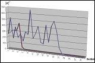 |
Charlie C.L. Wang,
"A note on least-norm solution of global WireWarping",
Computer-Aided Design, vol.41, no.9, pp.695-698, September 2009.
[PDF]
Abstract WireWarping is a fast surface flattening approach which presents a very important property of length-preservation on feature curves. The global scheme of WireWarping formulates the warping problem into an optimization in angle space and solves it by the Newton's method. However, some diverged examples were found in our recent tests. This technical note presents a least-norm solution in terms of angle-error for the global WireWarping. The experimental tests show that the least-norm solution is more robust than the Newton's algorithm. |
| 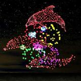 |
Hanli Zhao, Ran Fan, Charlie C.L. Wang, Xiaogang Jin, Yuwei Meng, "Fireworks controller",
Computer Animation and Virtual Worlds, Special Issue of International Conference on Computer Animation and Social Agents 2009, vol.20, no.2-3, pp.185-194, June 2009.
[Video@YouTube]
Abstract This paper presents the fireworks controller, a novel real-time shape-constrained fireworks animation system. We depict the shape of a firework by a 3D mesh. In order to approximate the mesh using evenly distributed points, we propose a fast point sampling method by extending the dual depth peeling algorithm. The samples are then taken as input to shape-constrained fireworks whose physically plausible animations are based on inverse dynamics. We present a highly parallel iterative clustering algorithm to support multi-level fireworks explosion. In order to simulate natural fuzzy fireworks, we impose extra random particles with a parallel random number generator. Experimental results demonstrate the prettiness and efficiency of the proposed approach. |
| 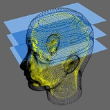 |
Shengjun Liu, and Charlie C.L. Wang, "Duplex fitting of zero-level and offset surfaces", Computer-Aided Design, vol.41, no.4, pp.268-281, April 2009.
[PDF]
Abstract Offset surfaces play an important role in various CAD/CAM applications. Given a set of oriented points, we propose a hierarchical method in this paper to fit both the zero-level surface and its offset surface with a single implicit function. The implicit function is formed by compactly supported radial basis functions (CSRBFs). Different from other existing methods in literature, our approach reconstructs an implicit function which interpolates or approximates both the zero-level surface and the offset surface of a given point set simultaneously. Employing locally supported functions leads to an efficient computational procedure, while the coarse-to-fine hierarchy makes our approach insensitive to the density of scattered data and allows us to reconstruct large parts of missing data. The performance of our method is demonstrated by a number of examples and the application of adaptive slicing hollowed models in rapid prototyping. |
| 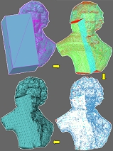 |
Yong Chen, and Charlie C.L. Wang, "Layered Depth-Normal Images for complex geometries - part one: accurate sampling and adaptive modeling", ASME IDETC/CIE 2008 Conference, 28th Computers and Information in Engineering Conference, New York City, New York, August 3-6, 2008. (Best Paper Award)
[PDF]
Abstract The layered depth-normal images (LDNIs) is an implicit representation of solid models that sparsely encodes the shape boundary in three orthogonal directions. We present a LDNI-based geometric modeling method for applications with high accuracy requirements. In our method, we first construct LDNIs models from input polygonal models. The accuracy of the generated LDNIs models can be controlled by setting pixel width during the construction process. Even for very complex geometries and high accuracy requirements, the construction process is fast with the aid of graphics hardware. Based on the LDNIs models, we then perform geometric modeling operations. Two types of operations are presented including regularizing and Boolean operations. The geometric modeling operations are straightforward and easy to be implemented robustly. From the processed LDNIs model, an adaptive sampling method is presented to construct a cell representation that includes both uniform and octree cells. Finally 2-manifold polygonal mesh surfaces are constructed from the cell representation. For high accuracy requirements that are typical in CAD/CAM applications, we present a volume tiling technique and a parallel implementation to accelerate the computation. Our method achieves a good balance between the accuracy and computational resources. We report experimental results on a variety of CAD models. The results demonstrate the effectiveness and efficiency of our approach especially for modeling complex geometries. |
| 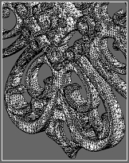 |
Charlie C.L. Wang, and Yong Chen, "Layered Depth-Normal Images for complex geometries - part two: manifold-preserved adaptive contouring", ASME IDETC/CIE 2008 Conference, 28th Computers and Information in Engineering Conference, New York City, New York, August 3-6, 2008.
[PDF]
Abstract We present an adaptive contouring approach to generate contour surface from solid models represented by Layered Depth-Normal Images (LDNI) sampled in three orthogonal directions. Our contouring algorithm builds an octree structure for mesh generation in a top-down manner: starting from the bounding box of a LDNI solid model, the cells are recursively subdivided into smaller sub-cells based on the topology and geometry criteria of refinement until both of the requirements, the topology in cell is simple and the geometry approximation error is less than a user defined tolerance, are satisfied. The subdivision also stops when the processed cells reach the finest resolution of LDNI models. In order to overcome the topology ambiguity inside a cell that leads to the occurrence of non-manifold entities, we analyze the possible inside/outside configurations of cell-nodes and exploit two strategies to generate manifold-preserved mesh surfaces. Moreover, the most time-consuming step of our contouring algorithm - the construction of octree structure can be easily parallelized to run under a computer framework with multiple-processors and shared memory. Several examples have been tested in the paper to demonstrate the success of our method. |
| 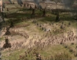 |
Xiaogang Jin, Jiayi Xu, Charlie C.L. Wang, Shengsheng Huang, and Jun Zhang,
"Interactive control of large-crowd navigation in virtual environment using vector field",
IEEE Computer Graphics and Applications, vol.28, no.6, pp.37-46, November/December 2008.
[PDF]
[Video@YouTube]
(This is an extended version of the paper - Interactive control of real-time crowd navigation in virtual environment, which is published in ACM Symposium on Virtual Reality Software and Technology 2007, Newport Beach, California, November 5-7, 2007. (Back Cover Image of Proceeding)) Abstract Providing interactive control is a hot topic in the research of crowd navigation. In this paper, we propose a simple but effective way for authoring crowd scene. The movement of each pedestrian is composed of an autonomous part and a user specified one, the ratio between them can be interactively adjusted. The governed part is realized by Radial Basis Functions (RBF) based vector fields. With this governing tool, users can easily drive the flow of crowds by sketching velocities on anchor points in the scene. Our approach is fast enough to allow on-the-fly modification of vector fields. |
| 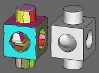 |
Charlie C.L. Wang,
"Extracting manifold and feature-enhanced mesh surfaces from binary volumes",
ASME Journal of Computing and Information Science in Engineering, vol.8, no.3, 2008. [PDF]
Abstract This paper presents an approach to automatically recover mesh surfaces with sharp-edges for solids from their binary volumetric discretizations (i.e., voxel models). Our method consists of three steps. The topology singularity is first eliminated on the binary grids so that a topology correct mesh M0 can be easily constructed. After that, the shape of M0 is refined and its connectivity is iteratively optimized into Mn. The shape refinement is governed by the duplex distance-fields derived from the input binary volume model. However, the refined mesh surface lacks sharp edges. Therefore, we employ an error-controlled variational shape approximation (VSA) algorithm to segment Mn into nearly planar patches, and then recover sharp edges by applying a novel segmentation-enhanced bilateral filter to the surface. Using the technique presented in this paper, smooth regions and sharp edges can be automatically recovered from raw binary volume models without scalar field or Hermite data. Comparing to other related surface recovering methods on binary volume, our algorithm needs less heuristic coefficients. |
| 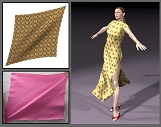 |
Chuan Zhou, Xiaogang Jin, and Charlie C.L. Wang,
"Shear buckling and dynamic bending in cloth simulation",
Computer Animation and Virtual Worlds, Special Issue of International Conference on Computer Animation and Social Agents 2008, vol.19, no.3-4, pp.493-503, August 2008.
[Video@YouTube]
Abstract This paper addresses the problem of simulating the mechanical behavior of cloth in computer animation, which is very important and challenging. The micro-structure of woven fabrics leads to significantly different shear reaction from other sheet materials, which has been neglected in previous approaches of cloth simulation. Therefore, it is beneficial for cloth simulation to model the shear buckling and structural bending separately. We analyze the shear buckling yielded by the micro-structure of woven and the dynamic bending based on the thin-shell theory, and develop a compact implementation of the new model on mass-spring systems. Experimental results show that the animations generated using this technique are with wrinkles and folds appearing and vanishing in a more natural way than other approaches. |
| 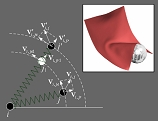 |
Chuan Zhou, Xiaogang Jin, and Charlie C.L. Wang,
"Efficient and stable simulation of cloth undergoing large rotations",
Computing in Science & Engineering, IEEE Computer Society and American Institute of Physics, vol.10, no.4, pp.30-40, 2008.
Abstract The semi-implicit integration scheme has been employed in cloth animation in recent years because of its high stability and efficiency. However, it will give notable vibrations on the mass-spring system because of the linear approximation on large rotations, which does always occur in the cloth simulation. Hence, the simulation suffers inaccuracy and inefficiency so that the number of iterations increases enormously and vibrates significantly in adjacent time steps. Unrealistic results are given on the large rotating surface regions. In this paper, we propose a novel physical model which is stable and efficient when simulating clothes with large rotation. Furthermore, our approach introduces less artificial damping effects than the previously proposed semi-implicit methods. |
| 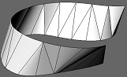 |
Chih-Hsing Chu, Charlie C.L. Wang, and Chi-Rung Tsai,
"Computer aided geometric design of strip using developable Bezier patches",
Computers in Industry, vol.59, no.6, pp.601-611, 2008. [PDF]
Abstract Developable strip is commonly used in product design due to its ease of manufacture. This paper proposes an algorithm for geometric design of strip using developable Bezier patches. It computes an aggregate of triangular and quadrilateral patches interpolate two given space curves defining a strip. The computation process selects optimal solutions in terms of surface assessment criteria specified by the user. Each patch is then degree-elevated to gain extra degrees of freedom, which produce G1 across the patch boundaries by modifying the control points while preserving the surface developability. Test examples with different design parameters illustrate and validate the feasibility of the proposed algorithm. In comparison with previous studies, this work allows strip design with freeform developable patches, generates better results in the surface assessment, and provides more flexible control on the design shape. It serves as a simple but effective approach for computer aided geometric design of developable strip. |
| 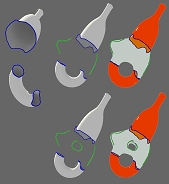 |
Juncong Lin, Xiaogang Jin, Charlie C.L. Wang, and Kin-Chuen Hui,
"Mesh composition on models with arbitrary boundary topology",
IEEE Transactions on Visualization and Computer Graphics, vol.14, no.3, pp.653-665, May/June, 2008.
[PDF]
[Video@YouTube]
Abstract This paper presents a new approach for the mesh composition on models with arbitrary boundary topology. After cutting the needed parts from existing mesh models and putting them into the right pose, an implicit surface is adopted to smoothly interpolate the boundaries of models under composition. An interface is developed to control the shape of the implicit transient surface by using sketches to specify the expected silhouettes. After that, a localized Marching Cubes algorithm is investigated to tessellate the implicit transient surface so that the mesh surface of composed model is generated. Different from existing approaches in which the models under composition are required to have pairwise merging boundaries, the framework developed based on our techniques have the new function to fuse models with arbitrary boundary topology. |
| 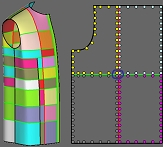 |
Charlie C.L. Wang,
"WireWarping: A fast surface flattening approach with length-preserved feature curves",
Computer-Aided Design, vol.40, no.3, pp.381-395, 2008.
[PDF]
Abstract This paper presents a novel approach - WireWarping for computing a flattened planar piece with length-preserved feature curves from a 3D piecewise linear surface patch. The property of length-preservation on feature curves is very important to industrial applications for controlling the shape and dimension of products fabricated from planar pieces. WireWarping simulates warping a given 3D surface patch onto plane with the feature curves as tendon wires to preserve the length of their edges. During warping, the surface-angle variations between edges on wires are minimized so that the shape of a planar piece is similar to its corresponding 3D patch. Two schemes - the progressive warping and the global warping schemes are developed, where the progressive scheme is flexible for local shape control and the global scheme gives good performance on highly distorted patches. Experimental results show that WireWarping can successfully flatten surface patches into planar pieces while preserving the length of edges on feature curves. |
| 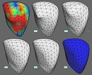 |
Charlie C.L. Wang,
"A least-norm approach to flattenable mesh surface processing",
IEEE International Conference on Shape Modeling and Applications 2008,
pp.131-138, Stony Brook, New York, USA, June 4-6, 2008. [PDF]
Abstract Following the definition of developable surface in differential geometry, the flattenable mesh surface, a special type of piecewise-linear surface, inherits the good property of developable surface about having an isometric map from its 3D shape to a corresponding planar region. Different from the developable surfaces, a flattenable mesh surface is more flexible to model the objects with complex shapes (e.g., the cramped paper or the warped leather with wrinkles). Modelling a flattenable mesh from a given input mesh surface can be solved under a constrained nonlinear optimization framework. In this paper, we reformulate the problem in terms of estimation error. Therefore, the shape of a flattenable mesh can be computed by the least-norm solutions in a faster speed. Moreover, the method by adding shape constraints to the modelling of flattenable mesh surfaces has been exploited. We show that the proposed method can compute flattenable mesh surfaces from input piecewise linear surfaces successfully and efficiently. |
| 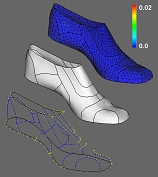 |
Charlie C.L. Wang,
"Flattenable mesh surface fitting on boundary curves",
ASME Journal of Computing and Information Science in Engineering, vol.8, no.2, 2008.
[PDF]
Abstract This paper addresses the problem of fitting flattenable mesh surfaces in R³ onto piecewise linear boundary curves, where a flattenable mesh surface inherits the isometric mapping to a planar region in R². The developable surface in differential geometry shows the nice property. However, it is difficult to fit developable surfaces to a boundary with complex shape. The technique presented in this paper can model a piecewise linear flattenable surface that interpolates the given boundary curve and approximates the cross-tangent normal vectors on the boundary. At first, an optimal planar polygonal region is computed from the given boundary curve B in R³, triangulated into a planar mesh surface, and warped into a mesh surface in R³ satisfying the continuities defined on B. Then, the fitted mesh surface is further optimized into a Flattenable Laplacian (FL) mesh which preserves the positional continuity and minimizes the variation of cross-tangential normals. Assembled set of such FL mesh patches can be employed to model complex products fabricated from sheets without stretching. |
| 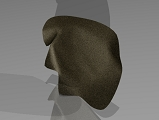 |
Charlie C.L. Wang,
"Towards flattenable mesh surfaces", Computer-Aided Design, vol.40, no.1, pp.109-122, 2008.
[PDF] [Data Set]
Abstract In many industries, products are constructed by assembled surface patches in R³, where each patch is expected to have an isometric map to a corresponding region in R². The widely investigated developable surfaces in differential geometry show this property. However, the method to model a piecewise-linear surface with this characteristic is still under research. To distinguish from the continuous developable surface, we name them as flattenable mesh surfaces since a polygonal mesh has the isometric mapping property if it can be flattened into a two-dimensional sheet without stretching. In this paper, a novel flattenable mesh surface (Flattenable Laplacian mesh) is introduced and the relevant modelling tool is formulated. Moreover, for a given triangular mesh which is almost flattenable, a local perturbation approach is developed to improve its flattenability. The interference between the meshes under process and their nearby objects has been prevented in this local flattenable perturbation. Both the computations of Flattenable Laplacian meshes and the flattenable perturbation are based on the constrained optimization technology. |
| 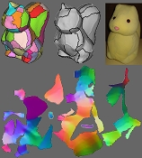 |
Charlie C.L. Wang,
"Computing length-preserved free boundary for quasi-developable mesh segmentation",
IEEE Transactions on Visualization and Computer Graphics, vol.14, no.1, pp.25-36, Jan/Feb, 2008.
[PDF] [Supplementary]
Abstract Stretch-free surface flattening has been requested by a variety of applications. At present, the most difficult problem is how to segment a given model into nearly developable atlases so that a nearly stretch-free flattening can be computed. The criterion for segmentation is needed to evaluate the possibility of flattening a given surface patch, which should be fast computed. In this paper, we present a method to compute the length-preserved free boundary (LPFB) of a mesh patch which speeds up the mesh parameterization. The distortion on parameterization can then be employed as the criterion in a trial-and-error algorithm for segmenting a given model into nearly developable atlases. The computation of LPFB is formulated as a numerical optimization problem in the angle space, where we are trying to optimize the angle excesses on the boundary while preserving the constraints derived from the closed-path theorem and the length preservation. |
| 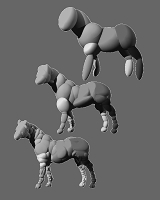 |
Shengjun Liu, Charlie C.L. Wang, Kin-Chuen Hui, Xiaogang Jin, and Hanli Zhao,
"Ellipsoid-tree construction for solid objects",
Proceedings of ACM Symposium on Solid and Physical Modeling 2007, pp.303-308, Beijing, China, June 4-6, 2007.
[PDF]
Abstract As ellipsoids have been employed in the collision handling of many applications in physical simulation and robotics systems, we present a novel algorithm for generating a bounding volume hierarchy (BVH) from a given model with ellipsoids as primitives. Our algorithm approximates the given model by a hierarchical set of optimized bounding ellipsoids. The ellipsoid-tree is constructed by a top-down splitting. Starting from the root of hierarchy, the volume occupied by a given model is divided into k sub-volumes where each is approximated by a volume bounding ellipsoid. Recursively, each sub-volume is then subdivided into ellipsoids for the next level in the hierarchy. The k ellipsoids at each hierarchy level for a sub-volume bounding is generated by a bottom-up algorithm - simply, the sub-volume is initially approximated by m spheres (m >> k), which will be iteratively merged into k volume bounding ellipsoids and globally optimized to minimize the approximation error. Benefited from the anisotropic shape of primitives, the ellipsoid-tree constructed in our approach gives tighter volume bound and higher shape fidelity than another widely used BVH, sphere-tree. |
| 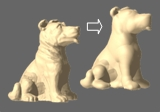 |
Shengjun Liu, Xiaogang Jin, Charlie C.L. Wang, and Kin-Chuen Hui,
"Ellipsoidal-blob approximation of 3D models and its applications", Computers & Graphics, vol.31, no.2, pp.243-251, 2007.
[PDF]
[Video@YouTube]
Abstract This paper presents a technique for automatically approximating a given mesh model with an ellipsoidal blobby model. Firstly, an ellipsoid decomposition algorithm is introduced to approximate given models by ellipsoids. After that, a blobby implicit surface employing ellipsoidal blobs is modeled to fit the sampling points on the given mesh. Finally, the reconstructed ellipsoidal blobby model is applied in two applications: the geometry data reduction and the target shape controlled cloud animation. |
| 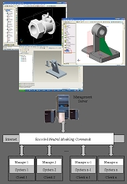 |
Min Li, Shuming Gao, and Charlie C.L. Wang,
"Real-time collaborative design with heterogeneous CAD systems based on neutral modeling commands",
ASME Journal of Computing and Information Science in Engineering, vol.7, no.2, pp.113-125, 2007.
[PDF]
Abstract This paper presents an integration-based solution for developing a real-time collaborative design platform on heterogeneous CAD systems. Different from the visualization-based approaches, the product models under design are allowed to be constructed and be modified from various sites together in the proposed collaborative design platform. Our approach is based on a mechanism for the translation between system modeling operations (SMO) and neutral modeling commands (NMC). Every operation given by a user on one site is translated into a NMC and transmitted to all the other sites through network, and then the received NMC is converted into corresponding SMOs on every other site instantaneously. Since only the commands but not the product data are transferred, the data size under transmission is greatly reduced - so that a real-time synchronization can be achieved with a standard bandwidth. In addition, by developing system-dependent NMC-SMO translators on different client CAD systems, users on different sites could join the collaboration by using their familiar CAD systems; this is the benefit that cannot be offered by the homogeneous co-design systems. The prototype implementation proves that our approach works well for integrating various current popular commercial CAD/CAM systems into a real-time collaborative design platform. |
| 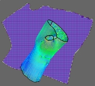 |
Charlie C.L. Wang, and Kai Tang,
"Woven model based geometric design of elastic medical braces", Computer-Aided Design, vol.39, no.1, pp.69-79, 2007.
[PDF]
Abstract This paper presents an algorithm for automatically computing the planar patterns of custom-made assistive medical braces, which are employed to restrict the motion of the joints (such as wrist and knee) that suffer from musculoskeletal disorders caused by repetitive strain injuries. An elastic brace is manufactured by warping a planar elastic fabric pattern. With a specified material, different shapes of planar patterns for producing a brace will generate different biomechanical effects on the joint. As an assistive medical device, an elastic brace is often requested to provide certain normal pressures at certain specific locations on the joint. Traditionally the planar pattern of a brace respecting the prescribed normal pressure requirement is designed through empirical tests by trial-and-error. We develop a woven fitting based method in this paper to automate this geometric design process. |
| 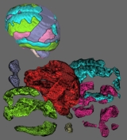 |
Charlie C.L. Wang,
"Direct extraction of surface meshes from implicitly represented heterogeneous volumes", Computer-Aided Design, vol.39, no.1, pp.35-50, 2007.
[PDF]
Abstract This paper describes a novel algorithm to extract surface meshes directly from implicitly represented heterogeneous models made of different constituent materials. Our approach can directly convert implicitly represented heterogeneous objects into a surface model separating homogeneous material regions, where every homogeneous region in a heterogeneous structure is enclosed by a set of two-manifold surface meshes. Unlike other discretization techniques of implicitly represented heterogeneous objects, the intermediate surfaces between two constituent materials can be directly extracted by our algorithm. Therefore, it is more convenient to adopt the surface meshes from our approach in the boundary element method (BEM) or as a starting model to generate volumetric meshes preserving intermediate surfaces for the finite element method (FEM). The algorithm consists of three major steps: firstly, a set of assembled two-manifold surface patches coarsely approximating the interfaces between homogeneous regions are extracted and segmented; secondly, signed distance-fields are constructed that each field expresses the Euclidean distance from points to the surface of one homogeneous material region; and finally, coarse patches generated in the first step is dynamically optimized to give adaptive and high-quality surface meshes. The manifold topology is preserved on each surface patch. |
 |
Jianbing Shen, Xiaogang Jin, Chuan Zhou, and Charlie C.L. Wang,
"Gradient based image completion by solving Poisson equation", Computers & Graphics, vol.31, no.1, pp.119-126, 2007.
[PDF]
Abstract This paper presents a novel gradient-based image completion algorithm for removing significant objects from natural images or photographs. Our method reconstructs the region of removal in two phases. Firstly, the gradient maps in the removed area are completed through a patch based filling algorithm. After that, the image is reconstructed from the gradient maps by solving a Poisson equation. A new patch-matching criterion is developed in our approach to govern the completed of gradient maps. Both the gradient and the color information are incorporated in this new criterion, so a better image completion result is obtained. Several examples and comparisons are given at the end of the paper to demonstrate the performance of our gradient-based image completion approach. |
| 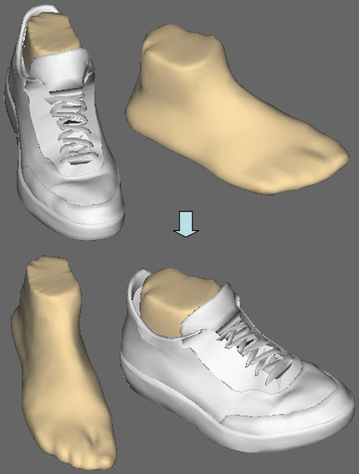 |
Charlie C.L. Wang, Kin-Chuen Hui, and K.M. Tong,
"Volume parameterization for design automation of customized free-form products",
IEEE Transactions on Automation Science and Engineering, vol.4, no.1, pp.11-21, 2007.
[PDF]
Abstract This paper addresses the problem of volume parameterization that serves as the geometric kernel for design automation of customized free-form products. The purpose of volume parameterization is to establish a mapping between the spaces near to two reference free-form models, so that the shape of a product presented in free-form surfaces can be transferred from the space around one reference model to another reference models. The mapping is expected to keep the spatial relationship between the product model and reference models as much as possible. We separate the mapping into rigid body transformation and elastic warping. The rigid body transformation is determined by anchor points defined on the reference models using a least-square fitting approach. The elastic warping function is more difficult to obtained, especially when the meshes of the reference objects are inconsistent. A three-stage approach is conducted. Firstly, a coarse-level warping function is computed based on the anchor points. In the second phase, the topology consistency is maintained through a surface fitting process. Finally, the mapping of volume parameterization is established on the surface fitting result. Comparing to previous methods, the approach presented here is more efficient. Also, benefited from the separation of rigid body transformation and elastic warping, the transient shape of a transferred product does not give unexpected distortion. At the end of this paper, various industry applications of our approach in design automation are demonstrated. |
| 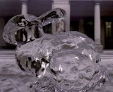 |
Shengjun Liu, Xiaogang Jin, Charlie C.L. Wang, and Jim X. Chen,
"Water-wave animation on mesh surfaces",
Computing in Science & Engineering, IEEE Computer Society and American Institute of Physics, vol.8, no.5, pp.81-87, Sept/Oct, 2006.
[Errata]
[Video@YouTube]
Abstract This article proposes a practical approach for simulating the phenomenon of water waves on 3D mesh surfaces. First of all, the geodesic distance map, which will govern the movement of water waves in the simulation, is computed on a given mesh surface. Based on the geodesic distance map, we then simulate the water waves on 3D surfaces using a sinusoidal wave model with damping. Our computing method for the geodesic distance map can process the scenario with multiple sources. Together with the method for superposing multiple water waves, the water waves with various sources can be simulated on the surface of a given mesh model. To demonstrate the performance of our approach, example animations are generated at the end of the paper - all can be updated in an interactive frame rate. |
| 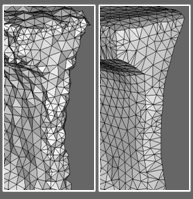 |
Charlie C.L. Wang,
"Bilateral recovering of sharp edges on feature-insensitive sampled meshes",
IEEE Transactions on Visualization and Computer Graphics, vol.12, no.4, pp.629-639, Jul/Aug, 2006.
[PDF]
Abstract A variety of computer graphics applications sample surfaces of 3D shapes in a regular grid without making the sampling rate adaptive to the surface curvature or sharp features. Triangular meshes that interpolate or approximate these samples usually exhibit relative big error around the insensitive sampled sharp features. This paper presents a robust approach conducting bilateral filters to recover sharp edges on such insensitive sampled triangular meshes. Motivated by the impressive results of bilateral filtering for mesh smoothing and denoising, we adopt it to govern the sharpening of triangular meshes. After recognizing the regions that embed sharp features, we recover the sharpness geometry through bilateral filtering, followed by iteratively modifying the given mesh's connectivity to form single-wide sharp edges that can be easily detected by their dihedral angles. We show that the proposed method can robustly reconstruct sharp edges on feature-insensitive sampled meshes. |
| 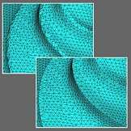 |
Charlie C.L. Wang,
"Incremental reconstruction of sharp edges on mesh surfaces",
Computer-Aided Design, vol.38, no.6, pp.689-702, 2006.
[PDF]
[Source Code]
Abstract Limited by the regular grids in computing, many modelling approaches (e.g., field-based methods) sample 3D shape insensitive to sharp features therefore exhibit aliasing errors, by which a lot of sharp edges and corners are lost on the reconstructed surface. An incremental approach for recovering sharp edges on an insensitive sampled triangular mesh is presented in this paper, so that shape approximation errors are greatly reduced. Either chamfered or blended sharp edges on an input triangular mesh could be successfully reconstructed by the signals inherent in the mesh. As a non-iterative method, our approach could be finished in a very short time comparing to those diffusion-based sharp-feature reproducers. The region embedding sharp features is first identified through normal variations. The positions of vertices in the sharp-feature embedded region are then predicted progressively from outer to the inner of sharp regions so that sharp edges could be recovered in the sense of region shrinking. |
| 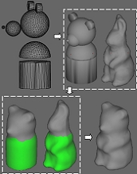 |
Yu Wang, Charlie C.L. Wang, and Matthew M.F. Yuen,
"Duplicate-skins for compatible mesh modelling",
Proceedings of ACM Symposium on Solid and Physical Modeling 2006, pp.207-217, Cardiff University, Wales, UK, June 6-8, 2006.
[PDF]
Abstract As compatible meshes play important roles in many computer-aided design applications, we present a new approach for modelling compatible meshes. Our compatible mesh modelling method is derived from the skin algorithm [Markosian et al. 1999] which conducts an active particle-based mesh surface to approximate the given models serving as skeletons. To construct compatible meshes, we developed a duplicate-skins algorithm to simultaneously grow two skins with identical connectivity over two skeleton models; therefore, the resultant skin meshes are compatible. Our duplicateskins algorithm has less topological constraints on the input models: multiple polygonal models, models with ill-topology meshes, or even point clouds could all be employed as skeletons to model compatible meshes. Based on the results of our duplicate-skins algorithm, the modelling method of n-Ary compatible meshes is also developed in this paper. |
| 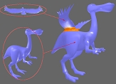 |
Xiaogang Jin, Juncong Lin, Charlie C.L. Wang, Jieqing Feng, and Hanqiu Sun,
"Mesh fusion using functional blending on topologically incompatible sections",
The Visual Computer, vol.22, no.4, pp.266-275, 2006.
[PDF]
Abstract Three-dimensional mesh fusion provides an easy and fast way to create new mesh models from existing ones. We introduce a novel approach of mesh fusion in this paper based on functional blending. Our method has no restriction of disk-like topology or one-ring opening on the meshes to be merged. First of all, the sections with boundaries of the under-fusing meshes are converted into implicit representations. An implicit transition surface, which joins the sections together while keeping smoothness at the boundaries, is then created based on cubic Hermite functional blending. Finally, the implicit surface is tessellated to form resultant mesh. Our scheme is both efficient and simple, with which users can easily construct complex 3D interesting models. |
| 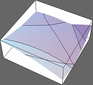 |
Kai Tang, Charlie C.L. Wang, and Danny Z. Chen,
"Minimum area convex packing of two convex polygons",
International Journal of Computational Geometry and Applications, vol.16, no.1, pp.41-74, 2006.
[PDF]
Abstract Given two convex polygons P and Q in the plane that are free to translate and rotate, a convex packing of them is the convex hull of a placement of P and a placement of Q whose interiors do not intersect. A minimum area convex packing of P and Q is one whose area is minimized. The problem of designing a deterministic algorithm for finding a minimum area convex packing of two convex polygons has remained open. We address this problem by first studying the contact configurations between P and Q and their algebraic structures. Crucial geometric and algebraic properties on the area function are then derived and analyzed which enable us to successfully discretize the search space. This discretization, together with a delicate algorithmic design and careful complexity analysis, allows us to develop an efficient O((n+m)nm) time deterministic algorithm for finding a true minimum area convex packing of P and Q, where n and m are the numbers of vertices of P and Q, respectively. |
| 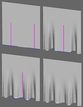 |
Yu Wang, Charlie C.L. Wang, and Matthew M.F. Yuen,
"Fast energy-based surface wrinkle modeling",
Computers & Graphics, vol.30, no.1, pp.111-125, 2006.
[PDF]
Abstract This paper presents an energy-based approach that models the distinct wrinkle shapes to represent the different material properties of non-rigid objects at an interactive speed. Our approach is a curve driven technique, where the surface wrinkles are generated by deforming the given mesh surface according to the shape change of a governing curve on the surface. An energy function is defined on the governing curve to indicate flexure properties. By minimizing the energy function, our approach offers the ability to mimic desirable and pleasing wrinkle shapes corresponding to the given material properties. We then propagate the wrinkle shape of the governing curve on the given mesh surface in the influence region. The final surface wrinkles interpolate the governing curve and are attenuated while they gradually move close to the boundary of the influence region to achieve the smoothness. Consequently, this results in the fast manipulation for complex wrinkle shapes with material properties. The most common problem of physically based simulation, the speed bottleneck, is avoided in our approach. In one word, our approach provides an efficient and useful interactive tool to model realistic wrinkles on non-rigid objects. |